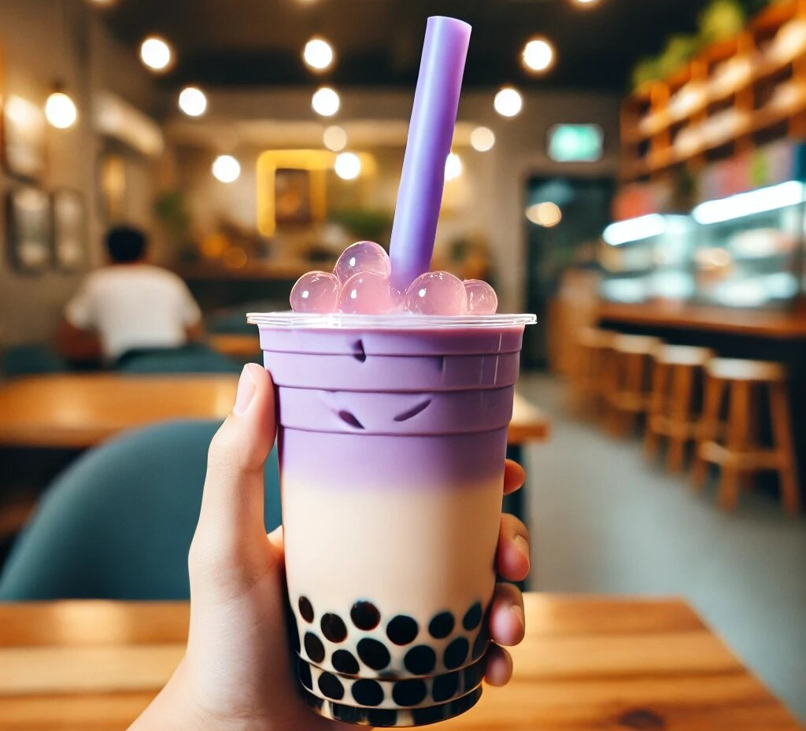

Taro Milk Tea: A Delightful Drink You Need to Try Today
If you’ve ever wandered into a bubble tea shop, you’ve probably seen taro milk tea on the menu. It’s that vibrant purple drink that looks like it was made by unicorns. But what exactly is taro milk tea, and why is it so popular? Spoiler alert: it’s delicious, Instagram-worthy, and has a lot more going for it than just its pretty color. Let’s dive into the world of taro milk tea and explore all the reasons why it deserves a spot in your life (and your stomach).

What Is Taro Milk Tea?
Before we get into the nitty-gritty, let’s start with the basics. Taro milk tea is a creamy, sweet drink made from taro root, milk, and tea. Taro is a starchy root vegetable that’s native to Southeast Asia and has been a staple in many cuisines for centuries. What does taro taste like? When turned into a powder or paste, it gives the drink its signature purple hue and a unique, slightly nutty flavor. Add some chewy boba pearls, and you’ve got yourself a drink that’s both refreshing and satisfying.
Why Taro Milk Tea Is the Best Thing Since Sliced Bread
- It’s Naturally Sweet and Delicious: Taro has a naturally sweet, earthy flavor that’s often compared to vanilla or sweet potato. If you're wondering what taro tastes like, it offers a smooth, creamy texture when blended into milk tea, making it hard to resist. Unlike some overly sugary drinks, taro milk tea strikes the perfect balance between sweet and subtle. It’s like a hug in a cup—comforting and just the right amount of indulgence.
- It’s Instagram-Worthy: Let’s be real: we all love a drink that looks as good as it tastes. Taro milk tea’s vibrant purple color is a feast for the eyes. Whether you’re snapping a pic for your Instagram story or just admiring it in real life, this drink is a visual treat. Plus, the contrast of the purple drink with the dark boba pearls is chef’s kiss.
- It’s Packed with Nutrients: Taro root isn’t just tasty—it’s also nutritious! It’s a good source of fiber, vitamins (like vitamin C and B6), and minerals (like potassium and magnesium). While taro milk tea isn’t exactly a health drink (thanks to the added sugar and milk), it’s nice to know that you’re getting some nutrients while you sip. Think of it as a treat with benefits.
- It’s Versatile: One of the best things about taro milk tea is how customizable it is. Don’t like boba? No problem—you can skip it or swap it for other toppings like grass jelly, pudding, or aloe vera. Prefer your drink less sweet? Ask for less sugar. Lactose intolerant? Many shops offer non-dairy milk options like almond or oat milk. The possibilities are endless, making it a drink that everyone can enjoy.
- It’s a Great Introduction to Bubble Tea: If you’re new to the world of bubble tea, taro milk tea is a fantastic place to start. Its mild, sweet flavor is approachable, and the chewy boba pearls add a fun texture that’s hard not to love. Once you’ve tried taro milk tea, you’ll be hooked—and ready to explore other flavors like matcha, Thai tea, or classic milk tea.
- It’s Perfect for Any Occasion: Taro milk tea is the ultimate all-purpose drink. Need a pick-me-up during a long workday? Taro milk tea has got your back. Meeting up with friends for a casual hangout? Taro milk tea is the perfect companion. Celebrating a small win (like finally finishing that pile of laundry)? Treat yourself to a taro milk tea. It’s versatile, delicious, and always hits the spot.
- It’s a Conversation Starter: Ordering a bright purple drink is bound to turn heads and spark conversations. Whether you’re introducing a friend to taro milk tea for the first time or bonding with a fellow bubble tea enthusiast over your shared love for the drink, it’s a great way to connect with others. Plus, it’s always fun to watch someone’s reaction when they take their first sip.
- It’s Comforting and Nostalgic: For many people, taro milk tea is more than just a drink—it’s a taste of home. Taro has been a beloved ingredient in Asian cuisine for generations, and its inclusion in milk tea brings a sense of comfort and nostalgia. Even if you didn’t grow up eating taro, there’s something inherently cozy about its flavor that makes it feel like a warm hug.
- It’s Widely Available: Thanks to the global bubble tea craze, taro milk tea is easier to find than ever. Whether you’re in a big city or a small town, chances are there’s a bubble tea shop nearby that serves it. And if you’re feeling adventurous, you can even make it at home! All you need is taro powder, milk, tea, and boba pearls (and maybe a little patience for cooking the boba).
- It’s Fun to Make at Home: Speaking of making it at home, taro milk tea is a great DIY project for bubble tea lovers. Not only is it fun to experiment with different ingredients and ratios, but it’s also a great way to save money. Plus, you can customize it exactly to your liking—extra boba, less sugar, or even a splash of coconut milk for a tropical twist.
How to Enjoy Taro Milk Tea Like a Pro
- Shake It Up: Before you take your first sip, give your drink a good shake.
- Experiment with Toppings: While boba pearls are the classic choice, don’t be afraid to try other toppings.
- Adjust the Sweetness: Most bubble tea shops let you customize the sweetness level.
- Pair It with a Snack: Taro milk tea pairs beautifully with Asian-inspired snacks.
- Take Your Time: Savor each sip and enjoy the experience.
Fun Facts About Taro Milk Tea
- Taro Isn’t Always Purple: While taro milk tea is known for its purple color, natural taro is actually a pale, grayish-white.
- It’s a Global Sensation: Taro milk tea has fans all over the world, from Taiwan to the United States, Europe, and beyond.
- Taro Has a Rich History: Taro has been cultivated for thousands of years and is a staple in many cultures.
Do you know about Thai tea?
Thai tea is a popular and flavorful beverage made from strongly brewed black tea, often spiced with ingredients like star anise, cardamom, and tamarind. It is sweetened with sugar and condensed milk, giving it a rich, creamy texture and a signature orange hue. Typically served over ice, Thai tea is both refreshing and indulgent, making it a favorite in Thai cuisine. The balance of bold tea flavors, sweetness, and creaminess creates a unique taste experience that pairs well with spicy dishes or can be enjoyed on its own as a delicious treat.
Final Thoughts: Why Taro Milk Tea Deserves a Spot in Your Life
Taro milk tea is more than just a trendy drink—it’s a delicious, versatile, and comforting treat that’s perfect for any occasion. Whether you’re a bubble tea newbie or a seasoned pro, there’s no denying the appeal of this sweet, creamy, and Instagram-worthy drink. So the next time you’re at a bubble tea shop, skip the usual and give taro milk tea a try. Your taste buds (and your Instagram feed) will thank you.
And hey, if you’re feeling adventurous, why not try making it at home? It’s a fun way to experiment with flavors and impress your friends with your bubble tea skills. Whether you’re sipping it at a café or whipping it up in your kitchen, taro milk tea is sure to bring a smile to your face. Cheers to that! 🥤💜